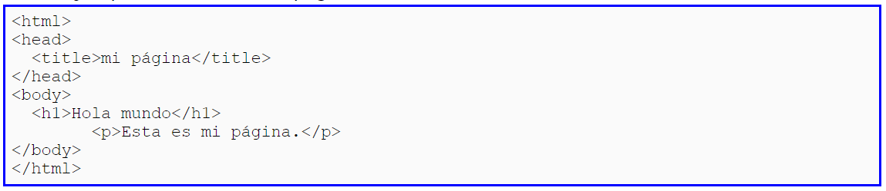

Definición
La W3C define el DOM o "Modelo de Objetos del Documento" como "una interfaz de programación de aplicaciones (API) para documentos HTML y XML." Es decir es la base o programa base sobre la que se construyen los documentos de HTML y XML. Todos los navegadores y otras aplicaciones que quieran mostrar documentos en estos formatos deben tener este programa base o interfaz. La W3C indica que el DOM "define la estructura lógica de los documentos y el modo en que se accede y manipula un documento." La W3C especifica: "Con el Modelo de Objetos del Documento los programadores pueden construir documentos, navegar por su estructura, y añadir, modificar o eliminar elementos y contenido". Es decir que tiene una escructura flexible en la cual se pueden añadir o quitar elementos.
Estructura
LEl DOM los documentos tienen una estructura parecida a un arbol, creando una estructura jerarquica en la que de un objeto principal pueden depender varios secundarios. Esto se ve claramente en la escructura que tiene la página de HTML, la cual consta de etiquetas anidadas.
Por ejemplo si tenemos una página web sencilla:
En el DOM se representa como una estructura de arbol de la siguiente manera:

Cada uno de los recuadros de la estructura anterior es un nodo. Los nodos son los elementos básicos de la estructura del DOM. Estos se relacionan unos con otros en una estructura jerárquica, de modo que cada nodo tiene un nodo superior del que depende, que es el nodo padre. Cada nodo puede tener 0, 1, ó varios nodos dependientes de él, éstos serán los nodos hijos. Los nodos que están a un mismo nivel, dependiendo todos ellos del mismo nodo padre, son nodos hermanos. Todo el arbol del DOM depende de un nodo principal a partir del cual se generan todos los demás. Es el nodo Document.
Tipos de nodos
Existen 12 tipos de nodos en realidad en las páginas web sólo tenemos los 5 siguientes:
Los demás tipos de nodos son: CDATASection, EntityReference, Entity, ProcessingInstruction, DocumentType, DocumentFragment, Notation. Estos se usan en el lenguaje XML, pero en HTML, si se emplean, suelen ser elementos fijos bastante definidos (etiqueta Doctype, caracteres de escape, etc). Veamos cuáles son estos nodos: